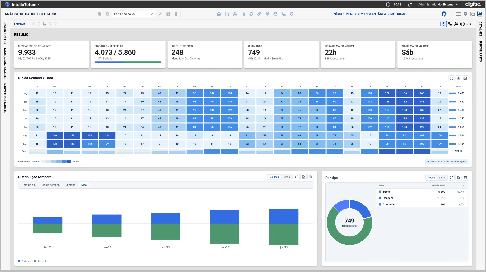
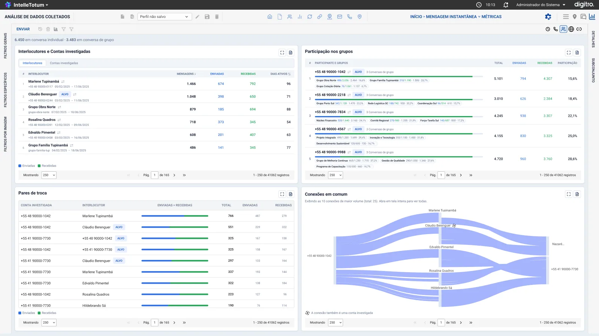
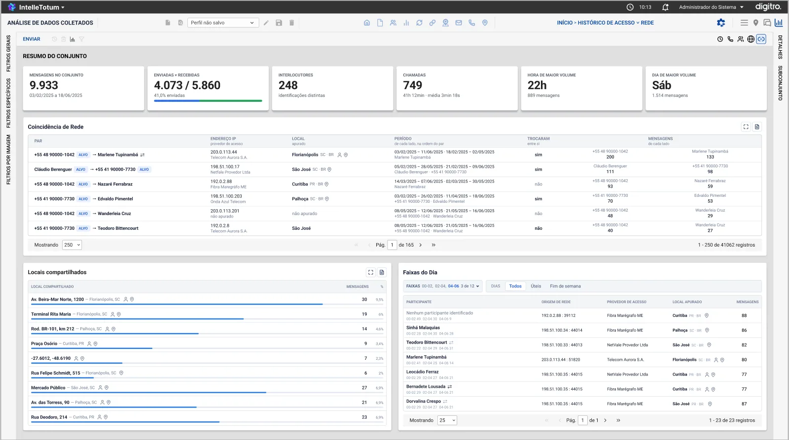
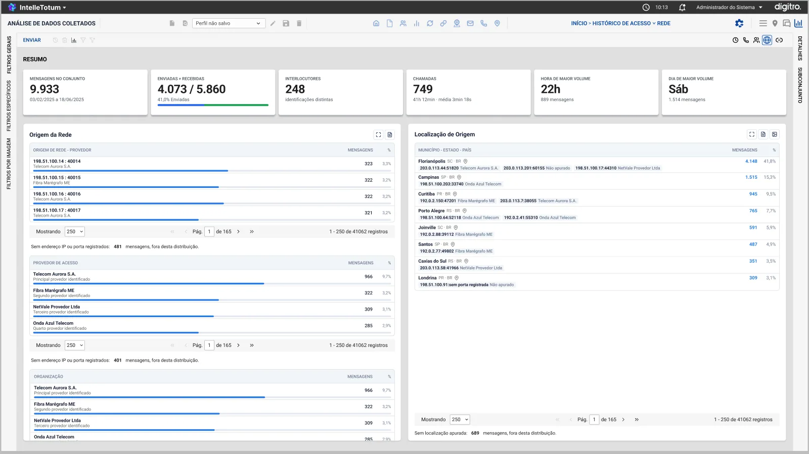

A aba de análise de dados do Guardião: transformar milhares de registros de comunicação em pistas claras pra quem investiga.


Visões de tempo e de participantes.
Todos os dados exibidos nas telas são fictícios.
O Guardião é o sistema da Dígitro usado por analistas de investigação e auditoria. É grande e denso, com muitas telas, filtros e dados. O IntelleTotum é a parte de análise de dados dele: a aba onde o analista transforma extratos de chamadas, mensagens, conexões e acessos à rede em respostas. O desafio era entregar muita informação sem deixar o sistema ainda mais pesado.
Dentro do Guardião, a análise ainda dependia de exportar planilhas e montar relatórios fora do sistema. Cada analista criava os próprios gráficos, perdia os filtros ao trocar de relatório, e o que importava (um pico, um contato frequente, uma conexão escondida) ficava enterrado.
A maior parte do dia ia em montar tabela e gráfico no Excel.
Horários recorrentes e picos não aparecem numa lista de 30 mil linhas.
Contas diferentes no mesmo IP ou no mesmo lugar só apareciam cruzando planilhas na mão.
Entrevistei analistas, acompanhei sessões reais de análise e revisei relatórios já entregues pra entender quais perguntas se repetem em toda investigação.
Entrevistados sobre rotina, ferramentas e o que mais demora.
De análise acompanhadas do começo ao fim.
Revisados pra mapear as perguntas que sempre aparecem.
Quando acontece, quem fala com quem, de onde vem e o que se cruza. Foram essas perguntas que viraram as visões da ferramenta.
Entrevistas, observação e revisão de relatórios · 2026
“Eu sei o que procuro. O problema é que levo uma manhã só pra conseguir enxergar.”
Analista de investigação
O topo da tela mantém sempre os seis números que dão contexto ao conjunto: mensagens, enviadas e recebidas, interlocutores, chamadas, hora e dia de maior volume. Abaixo, o analista alterna entre cinco visões sem perder os filtros aplicados.
Mapa de calor de dia da semana por hora, distribuição temporal e divisão por tipo.
Volume, duração e tipos de chamada.
Interlocutores, grupos, pares de troca e um diagrama de conexões em comum.
Origem de rede (IP e provedor) e localização de origem.
Contas no mesmo IP no mesmo período, locais compartilhados e faixas do dia.
Filtros gerais, específicos e por imagem na lateral, com painéis de detalhes e subconjunto.
O mapa de calor cruza dia da semana e hora, com a intensidade de cor proporcional ao volume e o pico destacado em texto ("Sáb às 01h · 160 mensagens"). Assim o padrão aparece em segundos, e o número exato continua lá pra quem precisar.
As contas investigadas ganham a marcação ALVO, e o diagrama de conexões em comum mostra visualmente quem liga duas contas.
Pares de contas que usaram o mesmo endereço IP, os locais que elas compartilham e em que faixas do dia isso acontece.

Com dezenas de gráficos e tabelas, a consistência é o que deixa a ferramenta aprendível. Todo widget segue as mesmas regras.
Alterna entre colunas, rosca e lista: o gráfico mostra o padrão e a lista dá a precisão.
Todo widget abre num modal estendido pra análise detalhada.
Cada bloco pode ser exportado pro relatório da investigação.
Nenhum dado aparece sozinho: "4.073 / 5.860" vem com "41,0% enviadas" e uma barra.
A visão de rede lista a origem das conexões e a localização, e os modais estendidos abrem a lista completa de cada grupo por cima da tela.

Estrutura de cada visão em baixa fidelidade, pra validar o que mostrar antes de como mostrar.
As cinco visões em alta fidelidade, testadas com tarefas reais de análise, como achar o horário de pico ou o contato mais frequente.
Widgets, tabelas, gráficos e tags reutilizáveis.
Página de handoff com especificações para engenharia.
Testei as cinco visões com 5 analistas, usando tarefas reais de análise.
Número sozinho não diz nada. Aprendi a sempre mostrar o dado com proporção, comparação ou destaque do que importa.
"Quando" pede mapa de calor, "quem" pede diagrama de conexões. Escolher a visualização certa é metade do trabalho.
Com dezenas de widgets, um comportamento único pra todos é o que deixa a ferramenta fácil de aprender.
Telas, fluxos, estados de erro, design system e handoff, do jeito que foram entregues.
Próximo projeto
FutureMind →